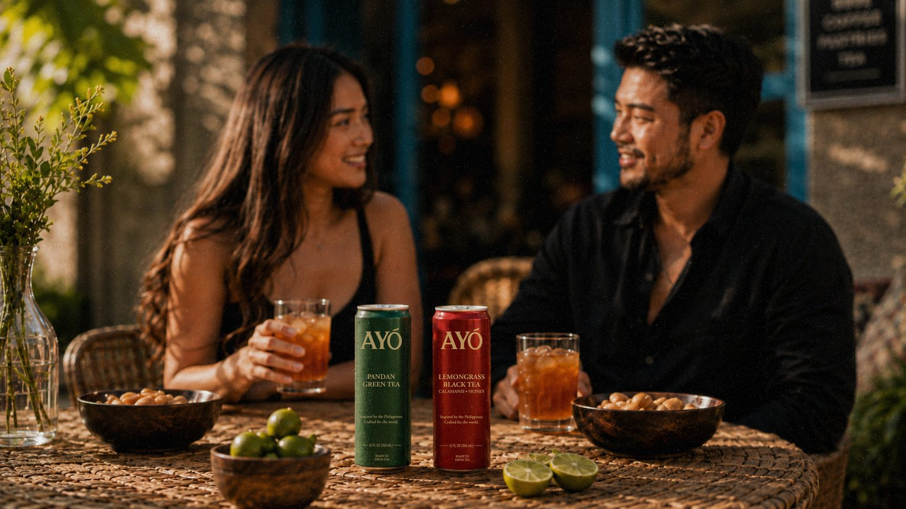
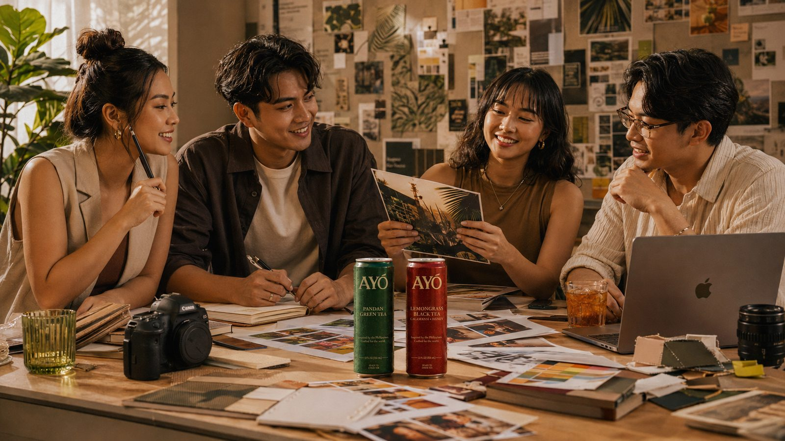
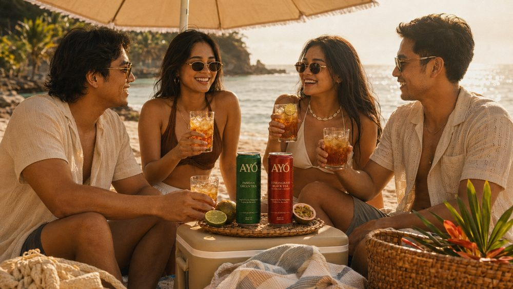
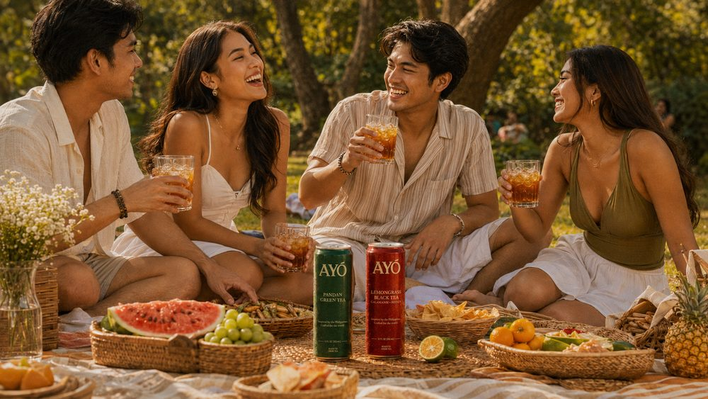
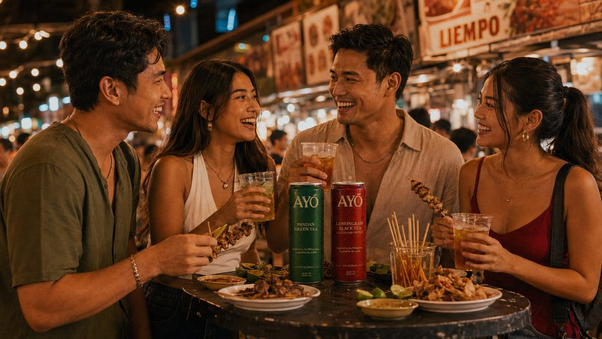

AYÓ began with a single feeling — the warmth of being welcomed. We bottled it.
“Ayó” is the sound of welcome. A hand extended, a seat saved, a glass poured.

AYÓ was born between two homes — the islands of the Philippines and the streets of Los Angeles. Founder Simon Tanaka grew up with calamansi on every counter and a kettle always warm, where hospitality wasn't a gesture but a way of being.
We set out to capture that feeling in a can: a premium, ready-to-drink tea that tastes like home and travels like a friend.
Brewed tea, calamansi, and a touch of honey. Nothing artificial — ever.
Filipino flavors — lemongrass, pandan, calamansi — reimagined for everyday.
Small batches, intentional sourcing, and a point of view in every sip.
Every flavor starts with a memory and ends in a tasting room. We brew real tea, balance it with calamansi and honey, and refuse to cut corners — because the people we make this for would notice.
Two flavors today. A point of view for the long run.
Explore the Flavors
Late-night brews of lemongrass and pandan tea, shared with family and friends who kept asking for more.
Months of tasting led to two recipes worth bottling — Lemongrass Black Tea and Pandan Green Tea.
Our first limited run launches Summer 2026. The waitlist opens — and the welcome begins.



